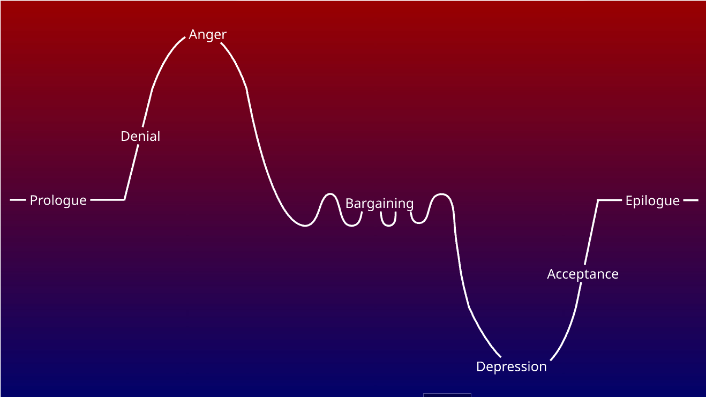

Therapeutic Narrative Game · Unity · PC
"A safe space to navigate the labyrinth of emotion through grief — not as theory, but as a personal journey to find the pieces of yourself you've lost."

Status
In Development
My Role
Game Designer
Engine
Unity
Genre
Narrative · Therapeutic
Platform
PC (Windows)
Design Phase
Complete ✓
The Concept
Memories of You is a therapeutic narrative game designed as a safe space for players to navigate the emotional labyrinth of grief. Rather than presenting the five stages of grief as a clinical framework, the game turns them into a personal journey — players traverse Denial, Anger, Bargaining, Depression, and Acceptance through daily life in Surabaya, experiencing how emotional states distort perception of reality.
The central thesis: grief doesn't just make us sad — it makes us see differently. The game's surrealist visual system, adaptive music, and expert system work together to make the player feel what distortion looks like, not just read about it.
The protagonist, "Me" (named by the player), shares their world with "Him" — a figure who slowly drifts away. A cactus they bought together serves as the game's living emotional metaphor: its health mirrors the relationship's state throughout every chapter.
Design Highlights
Flashback System
The same flashback memories — phone calls, eating together at the park, pranking Him — reappear with a different nuance depending on the grief stage the protagonist is in. Not just a cutscene, but a perception mechanic: the memory itself doesn't change, but the way the protagonist sees it shifts with their emotional state.
Daily Missions as Catharsis
Every daily mission is designed as a form of catharsis suited to its stage — a Hidden Object hunt for green flags in Denial, a Rage Room in Anger, a project management puzzle in Bargaining, resisting the urge to contact Him in Depression. Each mechanic reflects a specific emotional behavior that the expert system needs to detect.
Kaktus Symbolism
The cactus bought together with Him was meant to symbolise a relationship that could survive on minimal care — yet it dies anyway. The symbolic arc has a payoff: an empty pot of bare soil in Acceptance, then a sprout in the Epilogue. What sprouts is no longer a symbol of the relationship with Him, but of the protagonist's own resilience.
Colour Palette Follows Emotional Graph
The palette isn't an aesthetic choice — it's a direct visualisation of the emotional graph. The higher on the graph (Anger), the more fiery red. The deeper down (Depression), the darker blue trending toward monochrome black. Prologue and Epilogue are kept warm and full-spectrum because both are the most emotionally stable points in the arc.
Specific but Universal
The story is deeply specific: one person, one friendship at ITS Surabaya, one cactus. But "Him" is never named a name or described explicitly — a deliberate choice so players can project their own experience of loss onto the story. Target market research confirmed it: 8 respondents with entirely different losses all related to the same premise.
Expert System Integration
This game couldn't work with a scripted story — stage progression needed to be responsive to the player's emotional state. That design requirement demanded an expert system. I defined that night reflection becomes the input, identified the variables that needed tracking (Distress, Hope, Denial, Rumination), and specified what the system needed to detect narratively. The rule base and journal research were implemented by another team member.
The Five Stages
My Design Contributions
My role on this project is Game Designer — responsible for the GDD, NDD, TDD, ADD, and Target Market Research. The Expert System Design Document (rule base, knowledge base, and journal research) was handled by a separate team member; my contribution was defining the emotional design requirements that the system needed to respond to.
Game Design Document
Core gameplay loop, daily mission structure, world map (8 locations across ITS and Surabaya), character roster, expert system input/output spec, and overall game flow from prologue to epilogue.
Narrative Design Document
Full narrative arc per chapter, emotional tone and kaktus status per stage, all character profiles and relationships, 7 flashback memory sequences, and art + music direction per chapter.
Technical Design Document
System architecture flowchart, daily mission breakdown per chapter with mini-game mechanics, data schema (JSON + AES-256 encryption + SHA-256 integrity check), UI/UX implementation, and technical constraints.
Art Design Document
Full colour palette and surrealism logic per chapter, visual output rules tied to emotional variable states, character style board, environment style board, and moodboard references.
↳ System architecture diagram from the Technical Design Document
Expert System Overview — designed by team member
The expert system is a separate design contribution by another team member. It uses forward chaining inference to detect which grief stage the player is in and whether they're ready to progress, driven by 4 emotional variables tracked across every dialog choice. Understanding how it works is essential context for the game's design — but the rule base, knowledge base, and journal research behind it are not my work.
Distress Meter 0 – 100
Measures intensity of emotional suffering. Above 70 triggers visual effects. Above 90 is the threshold for stage transition. Based on the Dual Process Model of oscillating grief.
Hope Meter 0 – 100
Tracks agency and future pathways — not just feeling okay, but having a direction. Above 80 in Bargaining triggers a forced reality crash. Above 80 in Acceptance unlocks the True Ending.
Denial State 0 – 100
Detects self-deception — when explicit dialog choices say "I'm fine" but behavior patterns say otherwise. High Denial hides the logical answer option (C) from the player, simulating cognitive blindness.
Rumination Mode −100 – 100
Distinguishes between brooding (toxic, circular) and reflection (healthy, forward-looking). Brooding accelerates timer and locks Hope. Reflection opens paths toward Acceptance.
Visual Direction
Semi-realism meets surrealism — the world looks real enough to recognize, but warped enough to feel wrong. Each chapter has its own colour palette and distortion logic tied directly to the emotional variable states.
Research Foundation — expert system research by team member
The expert system's rule base is grounded in peer-reviewed psychology literature. Listed here as context for the game's design depth — this research was conducted by the team member responsible for the Expert System DD.
Design Documentation
All core design documents I created for this project, available for view-only access on Google Drive.
Core · My Work
Game Design Document
Core mechanics, gameplay loop, daily mission structure, world map, character roster, and overall game flow from prologue to epilogue.
Narrative · My Work
Narrative Design Document
Full plot per chapter, emotional arc, character relationships, 7 flashback memory sequences, and per-chapter artstyle/music direction.
Technical · My Work
Technical Design Document
System architecture, daily mission breakdown per chapter, data schema (JSON + AES-256), security design, and UI/UX implementation.
Art Direction · My Work
Art Design Document
Full colour palette per chapter, surrealism output logic, character style board, environment style board, and moodboard references.
Research · My Work
Target Market Research
8 qualitative interviews about personal experiences of loss, coping strategies, and game preferences. Directly informed narrative and mechanical design decisions.
Systems · Team Member
Expert System Design Document
Knowledge base, rule base per chapter, forward chaining inference engine, reflection questions with variable weightings, and journal citations.
Reference Games
When the Past was Around
Symbolic narrative puzzle — expanded with active reflection system
A Space for the Unbound
Magical realism for mental health — shifted focus from character story to player's emotional state
Gris
Visual emotion symbolism — made reflection explicit and interactive, not just visual
Omori
Psychological RPG — replaced intense confrontation with gradual, safe exposure
Spiritfarer
Cozy grief management — replaced task management with psychological reflection depth
Before Your Eyes
Memory-driven narrative — replaced physical interaction with conscious emotional input
Florence
Emotional relationship game — expanded into grief as full psychological process
Afterlove EP
Grief visual novel — replaced passive narrative with adaptive interactive gameplay
The Team
Nadine Angela Joelita Irawan (You)
Game Designer
Ja'far Balyan Al Karim
Technical Artist
Raziq Danish Safaraz
Game Programmer
Gabriele Monica Levina Christine
Game Artist
Rachel Bronzen
Expert System Programmer
Isabel Hayaaulia Ismail
Sound Engineer